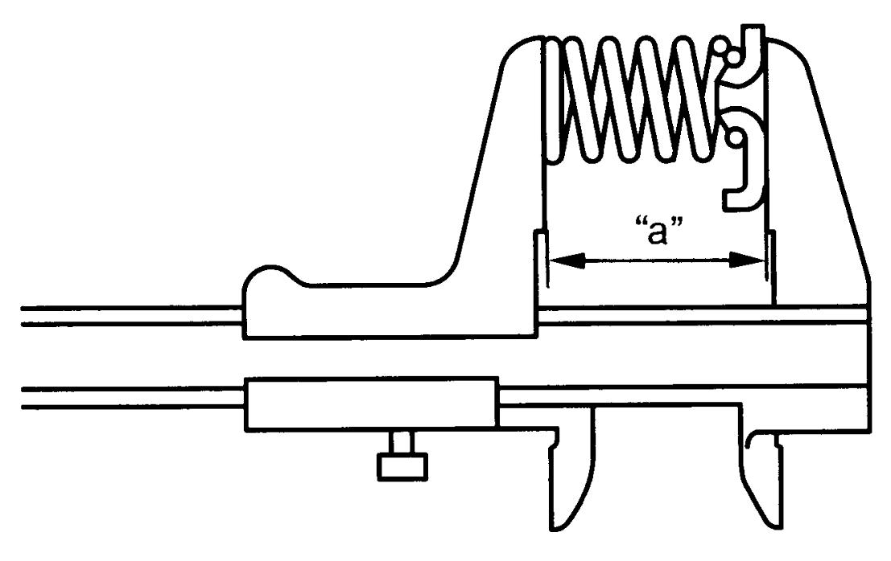
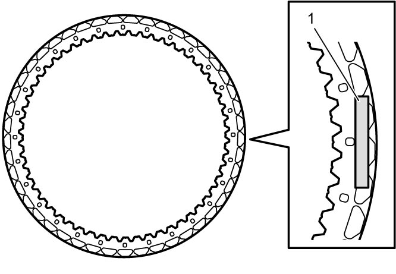

5A
| 1st and Reverse Brake Inspection |
1st and Reverse Brake Return Spring
Measure free length of 1st and reverse brake return spring.
If measured length is not as specified, replace 1st and reverse brake return spring.
NOTE:
•Do not apply excessive force when measuring spring free length.
•Perform measurement at several points.
•Perform measurement at several points.
1st and reverse brake return spring free length
“a”: 23.07 mm (0.9083 in.)

 "Expand image")
Brake Disc, Separator Plate and Retaining Plate
Check that sliding surfaces of brake discs, separator plates and retaining plate are not worn hard or burnt.
If necessary, replace.
NOTE:
•If disc lining is exfoliated or discolored, replace all discs.
•If print mark (1) is wearing away, replace all discs.

•If print mark (1) is wearing away, replace all discs.

 "Expand image")